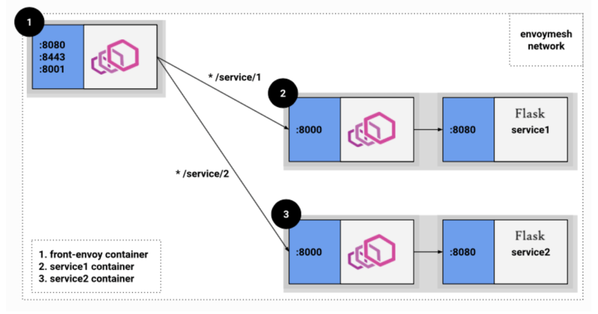
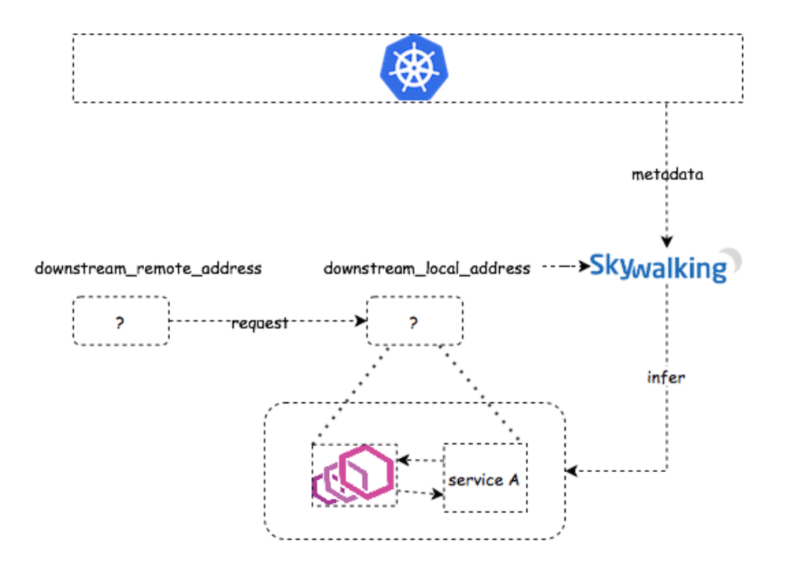
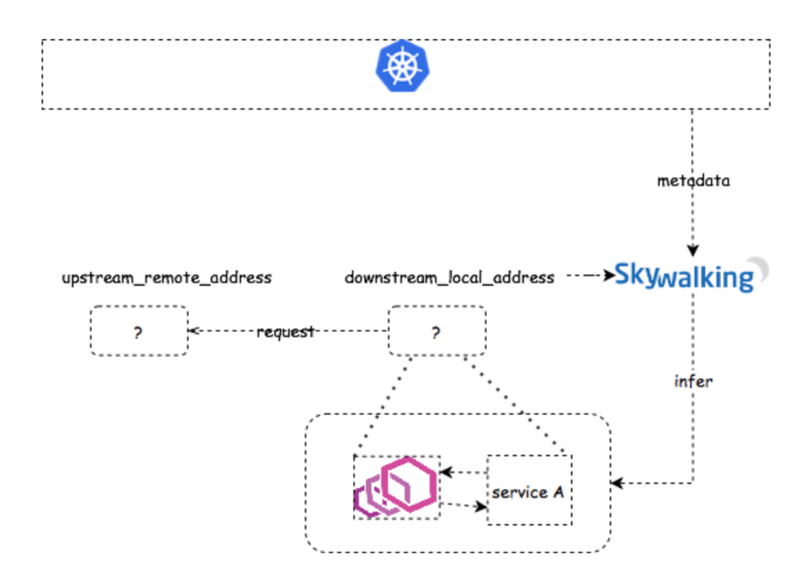
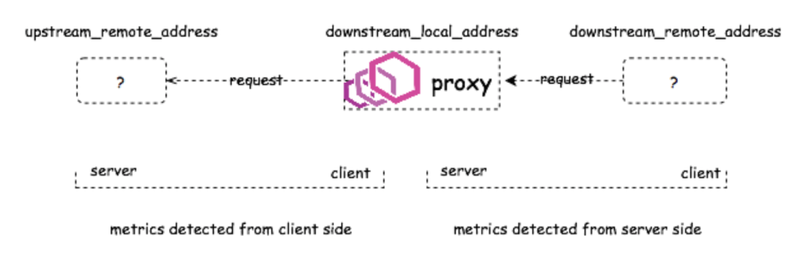
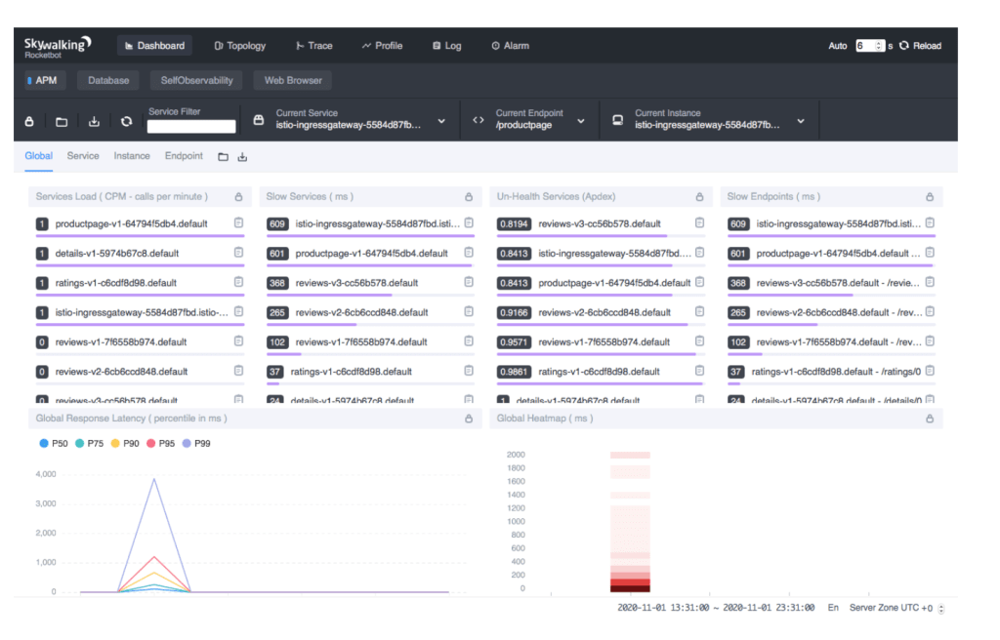
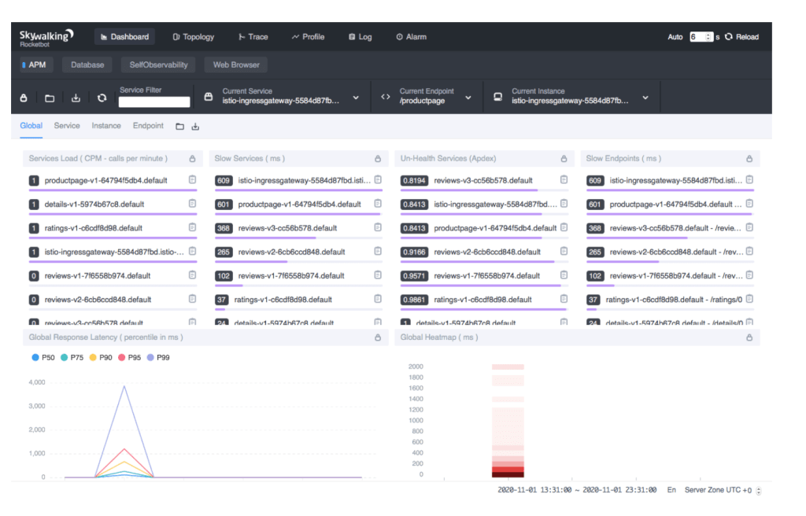

使用 SkyWalking 和 Envoy 访问日志服务对服务网格进行观察

如果你正在寻找在 Mixer 方案以外观察服务网格的更优解，本文正符合你的需要。
Apache Skywalking︰特别为微服务、云原生和容器化（Docker、Kubernetes、Mesos）架构而设计的 APM（应用性能监控）系统。
Envoy 访问日志服务︰访问日志服务（ALS）是 Envoy 的扩展组件，会将所有通过 Envoy 的请求的详细访问日志发送出来。
背景
Apache SkyWalking 一直通过 Istio Mixer 的适配器，支持服务网格的可观察性。不过自从 v1.5 版本，由于 Mixer 在大型集群中差强人意的表现，Istio 开始弃用 Mixer。Mixer 的功能现已迁至 Envoy 代理，并获 Istio 1.7 版本支持。
在去年的中国 KubeCon 中，吴晟和周礼赞基于 Apache SkyWalking 和 Envoy ALS，发布了新的方案：不再受制于 Mixer 带来的性能影响，也同时保持服务网格中同等的可观察性。这个方案最初是由吴晟、高洪涛、周礼赞和 Dhi Aurrahman 在 Tetrate.io 实现的。
如果你正在寻找在 Mixer 方案之外，为你的服务网格进行观察的最优解，本文正是你当前所需的。在这个教程中，我们会解释此方案的运作逻辑，并将它实践到 bookinfo 应用上。
运作逻辑
从可观察性的角度来说，Envoy 一般有两种部署模式︰Sidecar 和路由模式。 Envoy 代理可以代表多项服务（见下图之 1），或者当它作为 Sidecar 时，一般是代表接收和发送请求的单项服务（下图之 2 和 3）。

在两种模式中，ALS 发放的日志都会带有一个节点标记符。该标记符在路由模式时，以 router~ （或 ingress~）开头，而在 Sidecar 代理模式时，则以 sidecar~ 开头。
除了节点标记符之外，这个方案［1］所采用的访问日志也有几个值得一提的字段︰
downstream_direct_remote_address︰此字段是下游的直接远程地址，用作接收来自用户的请求。注意︰它永远是对端实体的地址，即使远程地址是从 x-forwarded-for header、代理协议等推断出来的。
downstream_remote_address︰远程或原始地址，用作接收来自用户的请求。
downstream_local_address︰本地或目标地址，用作接收来自用户的请求。
upstream_remote_address︰上游的远程或目标地址，用作处理本次交换。
upstream_local_address︰上游的本地或原始地址，用作处理本次交换。
upstream_cluster︰upstream_remote_address 所属的上游集群。
我们会在下面详细讲解各个字段。
Sidecar
当 Envoy 作为 Sidecar 的时候，会搭配服务一起部署，并代理来往服务的传入或传出请求。
-
代理传入请求︰在此情况下，Envoy 会作为服务器端的 Sidecar，以
inbound|portNumber|portName|Hostname[or]SidecarScopeID格式设定upstream_cluster。
SkyWalking 分析器会检查
downstream_remote_address是否能够找到对应的 Kubernetes 服务。如果在此 IP（和端口）中有一个服务（例如服务 B）正在运行，那我们就会建立起服务对服务的关系（即服务 B → 服务 A），帮助建立拓扑。再配合访问日志中的
start_time和duration两个字段，我们就可以获得延迟的指标数据了。如果没有任何服务可以和
downstream_remote_address相对应，那请求就有可能来自网格以外的服务。由于 SkyWalking 无法识别请求的服务来源，在没有源服务的情况下，它简单地根据拓扑分析方法生成数据。拓扑依然可以准确地建立，而从服务器端侦测出来的指标数据也依然是正确的。 -
代理传出请求︰在此情况下，Envoy 会作为客户端的 Sidecar，以
outbound|<port>|<subset>|<serviceFQDN>格式设定upstream_cluster。
客户端的侦测相对来说比代理传入请求容易。如果
upstream_remote_address是另一个 Sidecar 或代理的话，我们只需要获得它相应的服务名称，便可生成拓扑和指标数据。否则，我们没有办法理解它，只能把它当作 UNKNOWN 服务。
代理角色
当 Envoy 被部署为前端代理时，它是独立的服务，并不会像 Sidecar 一样，代表任何其他的服务。所以，我们可以建立客户端以及服务器端的指标数据。

演示范例
在本章，我们会使用典型的 bookinfo 应用，来演示 Apache SkyWalking 8.3.0+ （截至 2020 年 11 月 30 日的最新版本）如何与 Envoy ALS 合作，联手观察服务网格。
安装 Kubernetes
在 Kubernetes 和虚拟机器（VM）的环境下，SkyWalking 8.3.0 均支持 Envoy ALS 的方案。在本教程中，我们只会演示在 Kubernetes 的情境，至于 VM 方案，请耐心期待我们下一篇文章。所以在进行下一步之前，我们需要先安装 Kubernetes。
在本教程中，我们会使用 Minikube 工具来快速设立本地的 Kubernetes（v1.17 版本）集群用作测试。要运行所有必要组件，包括 bookinfo 应用、SkyWalking OAP 和 WebUI，集群需要动用至少 4GB 内存和 2 个 CPU 的核心。
minikube start --memory=4096 --cpus=2
然后，运行 kubectl get pods --namespace=kube-system --watch，检查所有 Kubernetes 的组件是否已准备好。如果还没，在进行下一步前，请耐心等待准备就绪。
安装 Istio
Istio 为配置 Envoy 代理和实现访问日志服务提供了一个非常方便的方案。内建的配置设定档为我们省去了不少手动的操作。所以，考虑到演示的目的，我们会在本教程全程使用 Istio。
export ISTIO_VERSION=1.7.1
curl -L https://istio.io/downloadIstio | sh -
sudo mv $PWD/istio-$ISTIO_VERSION/bin/istioctl /usr/local/bin/
istioctl install --set profile=demo
kubectl label namespace default istio-injection=enabled
然后，运行 kubectl get pods --namespace=istio-system --watch，检查 Istio 的所有组件是否已准备好。如果还没，在进行下一步前，请耐心等待准备就绪。
启动访问日志服务
演示的设定档没有预设启动 ALS，我们需要重新配置才能够启动 ALS。
istioctl manifest install \
--set meshConfig.enableEnvoyAccessLogService=true \
--set meshConfig.defaultConfig.envoyAccessLogService.address=skywalking-oap.istio-system:11800
范例指令 --set meshConfig.enableEnvoyAccessLogService=true 会在网格中启动访问日志服务。正如之前提到，ALS 本质上是一个会发放请求日志的 gRPC 服务。配置 meshConfig.defaultConfig.envoyAccessLogService.address=skywalking-oap.istio-system:11800 会告诉这个gRPC 服务往哪里发送日志，这里是往 skywalking-oap.istio-system:11800 发送，稍后我们会部署 SkyWalking ALS 接收器到这个地址。
注意︰
你也可以在安装 Istio 时启动 ALS，那就不需要在安装后重新启动 Istio︰
istioctl install --set profile=demo \
--set meshConfig.enableEnvoyAccessLogService=true \
--set meshConfig.defaultConfig.envoyAccessLogService.address=skywalking-oap.istio-system:11800
kubectl label namespace default istio-injection=enabled
部署 Apache SkyWalking
SkyWalking 社区提供了 Helm Chart ，让你更轻易地在 Kubernetes 中部署 SkyWalking 以及其依赖服务。 Helm Chart 可以在 GitHub 仓库找到。
# Install Helm
curl -sSLO https://get.helm.sh/helm-v3.0.0-linux-amd64.tar.gz
sudo tar xz -C /usr/local/bin --strip-components=1 linux-amd64/helm -f helm-v3.0.0-linux-amd64.tar.gz
# Clone SkyWalking Helm Chart
git clone https://github.com/apache/skywalking-kubernetes
cd skywalking-kubernetes/chart
git reset --hard dd749f25913830c47a97430618cefc4167612e75
# Update dependencies
helm dep up skywalking
# Deploy SkyWalking
helm -n istio-system install skywalking skywalking \
--set oap.storageType='h2'\
--set ui.image.tag=8.3.0 \
--set oap.image.tag=8.3.0-es7 \
--set oap.replicas=1 \
--set oap.env.SW_ENVOY_METRIC_ALS_HTTP_ANALYSIS=k8s-mesh \
--set oap.env.JAVA_OPTS='-Dmode=' \
--set oap.envoy.als.enabled=true \
--set elasticsearch.enabled=false
我们在 istio-system 的命名空间内部署 SkyWalking，使 SkyWalking OAP 服务可以使用地址 skywalking-oap.istio-system:11800 访问，在上一步中，我们曾告诉过 ALS 应往此处发放它们的日志。
我们也在 SkyWalking OAP 中启动 ALS 分析器︰oap.env.SW_ENVOY_METRIC_ALS_HTTP_ANALYSIS=k8s-mesh。分析器会对访问日志进行分析，并解析日志中的 IP 地址和 Kubernetes 中的真实服务名称，以建立拓扑。
为了从 Kubernetes 集群处获取元数据（例如 Pod IP 和服务名称），以识别相应的 IP 地址，我们还会设定 oap.envoy.als.enabled=true，用来申请一个对元数据有访问权的 ClusterRole。
export POD_NAME=$(kubectl get pods -A -l "app=skywalking,release=skywalking,component=ui" -o name)
echo $POD_NAME
kubectl -n istio-system port-forward $POD_NAME 8080:8080
现在到你的浏览器上访问 http://localhost:8080。你应该会看到 SkyWalking 的 Dashboard。 Dashboard 现在应该是空的，但稍后部署应用和生成流量后，它就会被填满。

部署 Bookinfo 应用
运行︰
export ISTIO_VERSION=1.7.1
kubectl apply -f https://raw.githubusercontent.com/istio/istio/$ISTIO_VERSION/samples/bookinfo/platform/kube/bookinfo.yaml
kubectl apply -f https://raw.githubusercontent.com/istio/istio/$ISTIO_VERSION/samples/bookinfo/networking/bookinfo-gateway.yaml
kubectl wait --for=condition=Ready pods --all --timeout=1200s
minikube tunnel
现在到你的浏览器上进入 http://localhost/productpage。你应该会看到典型的 bookinfo 应用画面。重新整理该页面几次，以生成足够的访问日志。
完成了！
这样做，你就成功完成设置了！再查看 SkyWalking 的 WebUI，你应该会看到 bookinfo 应用的拓扑，以及它每一个单独服务的指标数据。
 

疑难解答
- 检查所有 pod 的状态︰
kubectl get pods -A。 - SkyWalking OAP 的日志︰
kubectl -n istio-system logs -f $(kubectl get pod -A -l "app=skywalking,release=skywalking,component=oap" -o name)。 - SkyWalking WebUI 的日志︰
kubectl -n istio-system logs -f $(kubectl get pod -A -l "app=skywalking,release=skywalking,component=ui" -o name)。 - 确保 WebUI 右下方的时区设定在
UTC +0。
自定义服务器名称
SkyWalking 社区在 ALS 方案的 8.3.0 版本中，作出了许多改善。你现在可以在映射 IP 地址时，决定如何用 service 和 pod 变量去自定义服务器的名称。例如，将 K8S_SERVICE_NAME_RULE 设置为 ${service.metadata.name}-${pod.metadata.labels.version}，就可以使服务名称带上版本的标签，类似 reviews-v1、reviews-v2 和 reviews- v3，而不再是单个服务 review［2］。
在 VM 上使用 ALS
Kubernetes 很受欢迎，可是 VM 呢？正如我们之前所说，为了替 IP 找到对应的服务，SkyWalking 需要对 Kubernetes 集群有访问权，以获得服务的元数据和 Pod 的 IP。可是在 VM 环境中，我们并没有来源去收集这些元数据。
在下一篇文章，我们会介绍另外一个 ALS 分析器，它是建立于 Envoy 的元数据交换机制。有了这个分析器，你就可以在 VM 环境中观察服务网格了。万勿错过！
如果你希望在 ALS 方案或是混合式网格可观察性上获得商业支持，TSB 会是一个好选项。
额外资源
如有任何问题或反馈，发送邮件至 learn@tetrate.io。
Apache SkyWalking 创始人吴晟和 SkyWalking 的核心贡献者柯振旭都是 Tetrate 的工程师。 Tetrate 的内容创造者编辑与贡献于本文章。 Tetrate 帮助企业采用开源服务网格工具，包括 Istio、Envoy 和 Apache SkyWalking，让它们轻松管理微服务，在任何架构上运行服务网格，以至现代化他们的应用。